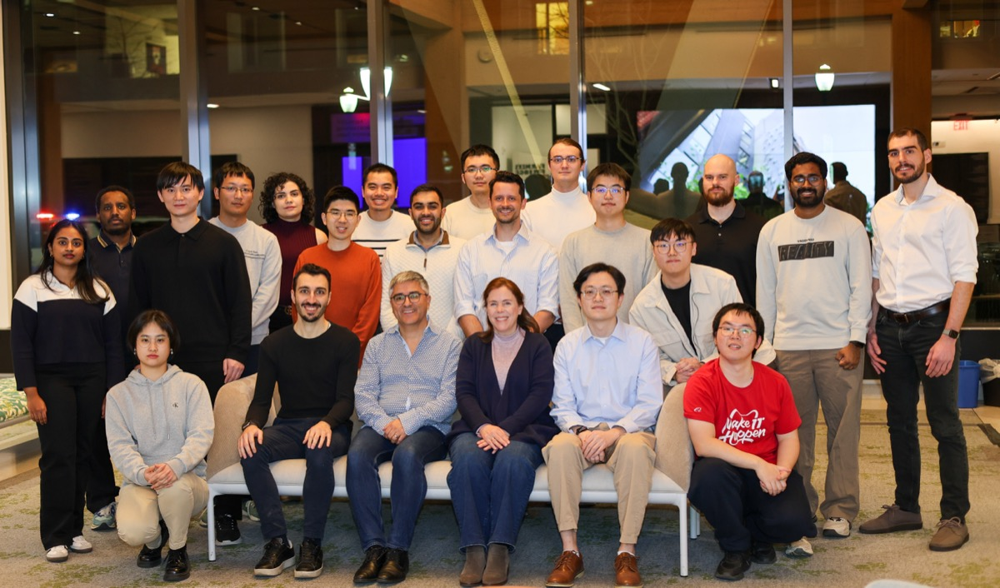
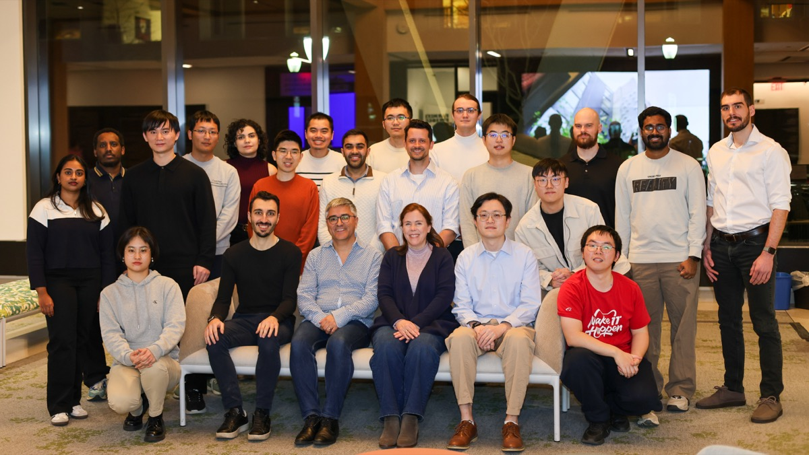
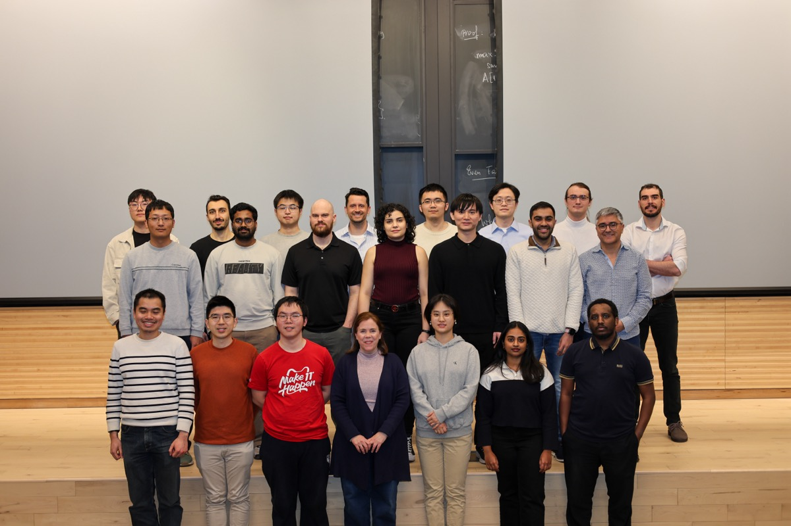
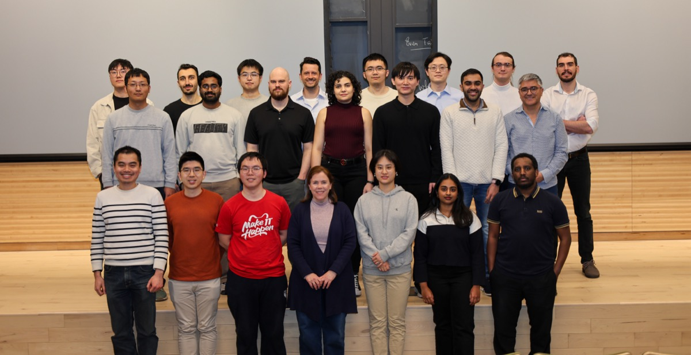
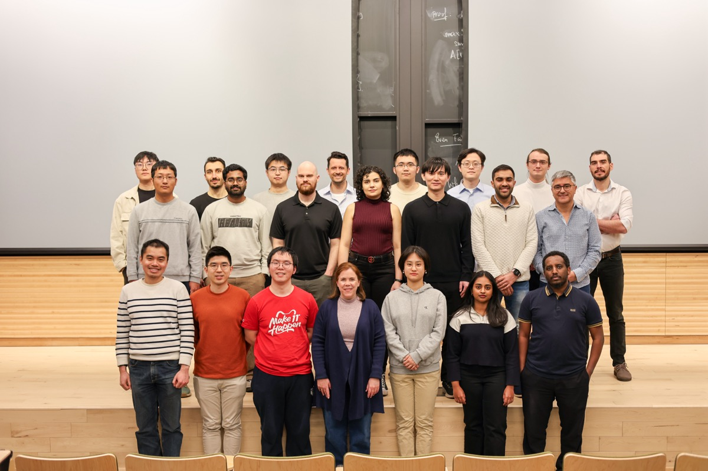

News
- Feb 2026 New preprints on Hierarchical Concept Pursuit and ImageRAGTurbo.
- Jan 2025 Paper on Gradient Flow accepted to ICML 2025.
- Nov 2024 Four papers accepted to NeurIPS 2024!
- Jul 2024 Paper on active binary testing accepted to ICML 2024.
Project Highlights
MICCAI 2025
IP-CRR: Information Pursuit for Interpretable Classification of Chest Radiology Reports
Preprint 2025
Conformal Information Pursuit for Interactively Guiding Large Language Models
Preprint 2025
SECA: Semantically Equivalent and Coherent Attacks for Eliciting LLM Hallucinations
IEEE TBE 2025